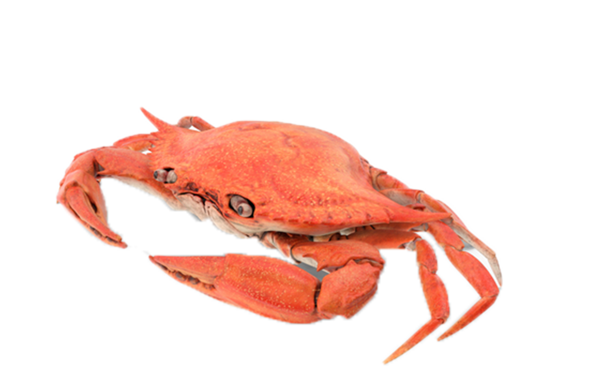

v class="image-container">
            
        </div>
        
        <div class="description">
            <p>
                Crabs are decapod crustaceans of the infraorder Brachyura (meaning "short tail" in Greek), which typically have a very short projecting tail-like abdomen, usually hidden entirely under the thorax. They live in all the world's oceans, in freshwater, and on land. They are generally covered with a thick exoskeleton. They generally have five pairs of legs, and they have pincer claws on the ends of the frontmost pair. They first appeared during the Jurassic period, around 200 million years ago.
            </p>
            <p>
                Crabs are generally covered with a thick exoskeleton, composed primarily of highly mineralized chitin.[4][5] Behind their pair of chelae (claws) are six walking legs and then two swimming legs. The crab breathes through gills on its underside; gills must be at least moist to work.
            </p>
            <p>
                Crabs vary in size from the pea crab, a few millimeters wide, to the Japanese spider crab, with a leg span up to 4 m (13 ft).[6] Several other groups of crustaceans with similar appearances – such as king crabs and porcelain crabs – are not true crabs, but have evolved features similar to true crabs through a process known as carcinisation.
            </p>
        </div>
    </div>
</body>
</html>
